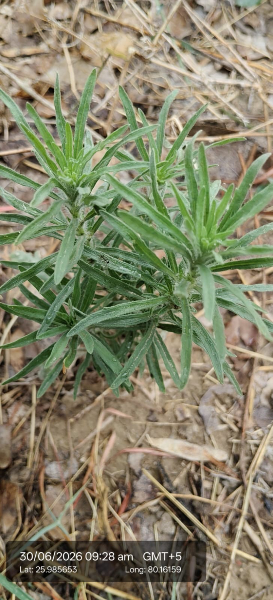

| Scientific name | Conyza canadensis (most common species; also C. bonariensis, C. sumatrensis) |
|---|---|
| Family | Asteraceae (Sunflower family) |
| Type | Annual herbaceous weed (not a tree or shrub). |
| Category | Herbs |
Habitat & Growing Conditions
- Found in fields, roadsides, wastelands, disturbed soils.
- Origin: Native to North America, now widespread in India and other regions.
- Tall upright stems, narrow serrated leaves, small white flowers.
- 💡 Economic & Ecological Importance (8–10 lines)
- Major agricultural weed, competes with crops.
- Known for herbicide resistance (glyphosate).
- Causes yield losses by competing for nutrients, water, sunlight.
- Used in traditional medicine (fever, diarrhea, skin ailments).
- Extracts show anti-inflammatory & antimicrobial properties.
- Helps in soil stabilization in disturbed areas.
- Can be used as green manure when managed.
- Provides nectar for pollinators (bees, butterflies).
- Sometimes used in folk remedies for wound healing.
- Overall, more harmful in farming but has niche medicinal/ecological uses.
Ecological & Economic Importance
Importance notes pending.